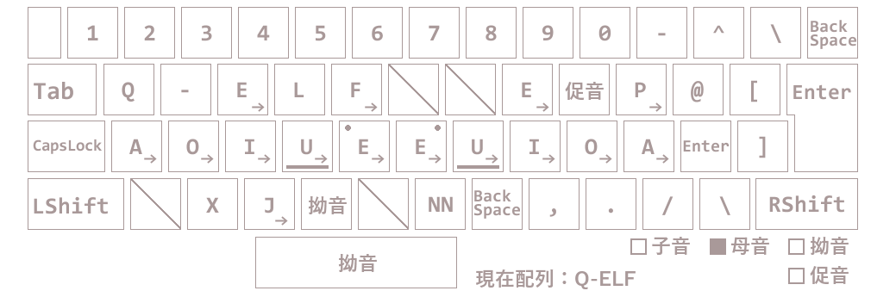

q-elf配列について
配列説明
初期状態
初期状態は下の画像のようになっています。この状態を以下，子音配列と呼びます。
TとNの下部にある茶線はホームポジションを表しています。
スラッシュ╲のキーは割り当てがないことを意味します。
記号説明
子音配列の状態の時，赤丸で囲まれた矢印のあるキーを押すとそのキーに対応する子音が選択され直ちに母音配列(後述)へと変遷します。
YとHの上部にある茶丸は左右の境界線を表しています。緑がかったキーが左，黄色がかったキーが右の境界線です。
これらの区別は，母音選択の時に清音と濁音の決定に影響します。PFJキーは左右の区別はなく，どのような母音を選択しても半濁点(パ行)になります。

右下赤枠で囲まれている箇所は，現在の状態が母音配列か子音配列かを示しています。茶色で塗られている方が現在の状態です。
右下赤枠で囲まれている箇所は，現在のキーボードの配列の状態を示しています。Q-ELF配列とQWERTY配列と二つの状態があります。
母音配列
子音配列状態の時，矢印のあるキーを押すと以下のような画像の配列 母音配列 (一部省略(後述))へと変遷します。(前述参照)

子音配列時，母音SMTYつまり左側のキーを押すと以下のように変化します。
各キーの上にある濁，清，の文字はその母音を選択した時，子音がどう変化するかを示しています。
清の表示があるキーを押すと子音が清音のまま打ち込まれます。
濁の表示があるキーを押すと子音が濁音に変化します。但し，対応する濁音がないときは変化しません。
変化例
例示
- Sを押した後A(清)を押すと"さ"と入力されます。
- Sを押した後A(濁)を押すと"ざ"と入力されます。
- Tを押した後U(清)を押すと"つ"と入力されます。
- Tを押した後O(濁)を押すと"ど"と入力されます。
- Mを押した後I(清)を押すと"み"と入力されます。
- Mを押した後U(濁)を押すと"む"と入力されます。
- 母音を押した後E(清)を押すと"え"と入力されます。
- 母音を押した後I(濁)を押すと"い"と入力されます。
子音配列時，HNKRW，つまり右側のキーを押すと以下のように変化します。
左側のキーを押した時とは清と濁の配置が逆になります。
清濁の変化は左側の例と同じです。
キー説明
拗音,促音は母音のキーを押す前に押してください。S→拗音→O(清)や拗音→S→O(清)でSYOが入力できます。
拗音や促音を押した場合，それに対応する欄が茶色に塗られます。
拗音
子音に小さい ゃゅょ 等を挿入します。具体的には子音と母音の間にYを挿入します。例えば，S→拗音→O(清)でSYOが入力されます。
促音
子音の前に小さい っ 等を挿入します。具体的には子音を二回入力します。例えば，T→促音→E(濁)で DDE が入力されます。
NN
んを挿入します。具体的にはNNを入力します。例えば，K→A(清)→NN→N→Aで KANNNA が入力されます。
Enter
改行します。
BackSpace
一文字削除します。
状態遷移について
- Ctrlを押している間，QWERTY配列になります。 ℹ️ショートカットキーに対する配慮です。
- Q-ELF配列時，Lを押すとQWERTY配列に切り替わります。その後，QWERTY配列でLが押されます。 ℹ️SKKではLを押すと日本語配列から英語配列に切り替わるからです。
- Q-ELF配列時，Spaceを5回連続で押すとQWERTY配列になります。切替わり後1回ASDFJKLのいずれかのを押すとそのキーを押した後，Q-ELF配列に切替わります。前述のキーとSpace以外を押すとそのキーを押しQ-ELF配列へと切替わります。 ℹ️SKKでは，予測変換時Spaceを5回連続で押すとASDFJKLで表示される変換一覧から選ぶ為です。なお，この時Lを選んでもQWERTY配列にはなりません(前項参照)。
- QWERTY配列時，CtrlJを押すとQ-ELF配列に切り替わります。ℹ️SKKでは，CtrlJで英語配列から日本語配列へと切り替わるためです。
その他Tips
- 子音配列または母音配列もしくはその両方の時，Shiftを押しながら入力すると平仮名入力時にShiftを押しながら入力します。ℹ️SKKに近い打鍵感の実現のためです。
- Q-ELF配列時，QWERTY配列時におけるMℹ️Q-ELF配列時におけるBackSpaceを一意に特定出来るようにする為の言い回しです。を押すと，様々な状態がリセットされます。(その時母音配列ならば子音配列になるみたいな)